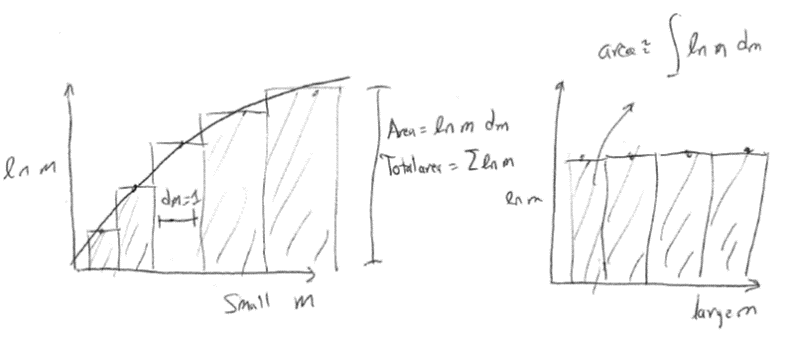
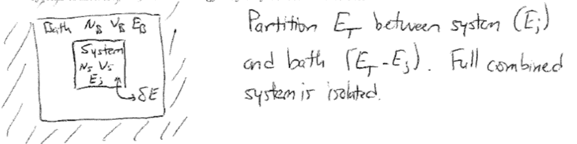

The Canonical Ensemble#
Additional Readings for the Enthusiast#
McQuarrie [2], Chapter 1, Chapter 2.1
Chandler [1], Chapter 3.1-3.4
Topics in this lecture#
Example of microcanonical ensemble
Stirling’s approximation
Canonical partition function
Application of the microcanonical ensemble: two-state system#
In the last lecture, we introduced the concept of the microcanonical ensemble, which we defined as the set of all possible microstates associated with a macrostate in which the number of particles (\(N\)), the volume (\(V\)), and the energy (\(E\)) are constant. We then defined several postulates of statistical mechanics, which we summarize as:
\(Y_\textrm{obs} = \langle Y \rangle\): the ergodic hypothesis, where \(\langle Y \rangle = \sum_i^\textrm{states} p_i Y_i\)
\(p_i = \frac{1}{\Omega(N,V,E)}\): the principle of equal a priori probabilities, where \(\Omega(N,V,E)\) is the degeneracy (or number of states) of the microcanonical ensemble
\(S = k_B \ln \Omega(N,V,E)\): the definition of the Boltzmann entropy.
We will now use an example to illustrate how the microcanonical ensemble can provide information about the thermodynamic properties of a system. Consider a polymer chain that adsorbs to an attractive surface. The chain is composed of \(N\) monomers that do not interact with each other. The surface is attractive such that a single monomer adsorbs favorably with an energy \(-\epsilon\). If we assume the energy of the free monomers is 0 and there are no monomer-monomer interactions, then the total energy of the system for \(n\) adsorbed monomers is:
The question we will ask is - how does the energy of the system (or, equivalently, the number of adsorbed monomers) depend on the temperature?
 {width=”100%”}
{width=”100%”}
We know the following relationships:
\(\left ( \frac{\partial E}{\partial S} \right )_V = T\) from thermodynamics
\(E = -n \epsilon\) from the microscopic description of the system given above
\(S = k_B \ln \Omega (E)\) from the definition of the entropy of the microcanonical ensemble using the shorthand version of \(\Omega(N,V,E)\)
Given these relationships, we can use the equations of the microcanonical ensemble to relate the degeneracy to the entropy and then identify a relationship between the energy and temperature from thermodynamics. Thus, we will describe our system as having a constant energy - that is, we assume that \(n\) and \(E\) are fixed and then will derive a temperature dependence based on this assumption. There may be another ensemble that is more appropriate - for example, we may assume the temperature is constant, instead, and choose a different ensemble (e.g. the canonical ensemble) to solve for the temperature dependence. If we are consistent in our assumptions and mathematical framework, then any ensemble is fine (as long as the fixed thermodynamic variables in the ensemble do not violate some feature of the system) and we will return to this problem with alternative ensembles in future lectures.
We need to start by computing an expression for the degeneracy. Recalling previous sections, we know that \(\Omega(E)\) is defined as the number of microstates that have the same energy \(E = - n\epsilon\). Since the number of total monomers, \(N\), is greater than the number of adsorbed monomers, \(n\), there are many possible ways to choose the the set of \(n\) adsorbed monomers from the total set of \(N\) monomers, but any set of \(n\) that we select will have the same energy. Therefore, the degeneracy of this system is equal to the number of unique ways to select \(n\) monomers that adsorb to the surface out of the possible set of \(N\) - or in other words, the number of unique ways to split the \(N\) monomers into two groups (adsorbed and free). Computing this quantity will motivate a mathematical aside.
Combinatorics#
Imagine that you have \(N\) objects. In general, objects can either be distinguishable, such as playing cards, or indistinguishable, such as identical marbles. A common question we will face is how many ways we can uniquely divide \(N\) distinguishable objects into groups. We can calculate this using playing cards as an example. First, we can count the number of unique ways to shuffle a deck of \(N\) distinguishable playing cards. We can imagine placing the first card on the top of the deck; there are \(N\) possible choices for the first card. Next, we can imagine placing the next card on the top of the deck. Since we have removed 1 card, there are now \(N-1\) choices remaining, so there are \(N(N-1)\) unique choices for placing the first two cards, and so on. This leads to:
If the playing cards were instead indistinguishable, then there would instead be only unique 1 arrangement of playing cards since switching the order of any two cards would not result in an observable change to the order of the deck. Now, we consider the question how many ways there are to divide \(N\) distinguishable playing cards into two groups, one containing \(n_1\) cards and the second containing \(N-n_1\) cards. Following the same reasoning as above, for the first group we have \(N\) options for the first card, \(N-1\) for the second, and so on, until for the last selection we have \(N-n_1+1\) choices. The total number of arrangements for group 1 is thus:
This expression appears in the binomial expansion and is referred to as the binomial coefficient, and can be expanded to any number of groups following similar reasoning.
Stirling’s approximation#
We have just seen an example of a calculation that uses factorials, which can become difficult to treat algebraically. Fortunately, there is an approximation that simplifies the use of factorials. Because \(N!\) is a product, it is easier to deal with \(\ln N!\) which is a sum. We can write:
The value of this sum is equal to the total area of a series of rectangles, each with height \(\ln m\) and width \(dm = 1\). That is, we can equate the sum to the integral of \(\ln m\) using rectangular integration. As \(N\) increases, the difference between successive terms in the sum will become very small - if \(N \gg 1\), the difference in the terms becomes:
Therefore, for \(N\gg1\) we can replace the sum over discrete values of \(m\) with an integral over continuous values of \(m\) - effectively allowing the width of each rectangle (\(dm\)) to shrink to an infinitesimal value. The error between the approximation using an integral and the exact sum over integer values of \(m\) is very small once \(N\) is large. The resulting approximation allows us to write:
Equation [stirling]{reference-type=”ref” reference=”stirling”} is Stirling’s approximation, and differs by less than 1% from \(\ln N!\) if \(N > 50\). We will make frequent use of Stirling’s approximation, and moreover we will often approximate summations as integrals, throughout the course. We will return to solving the example using Stirling’s approximation and combinatorics in the next lecture.
{width=”100%”}
Back to the example#
Having defined methods for splitting objects into two groups, we can now count how many ways there are to separate \(N\) monomers into a group of \(n\) that are adsorbed to a surface and \(N-n\) that are not which defines the degeneracy of a microcanonical ensemble with \(\langle E \rangle = n\epsilon\). We thus write an expression for \(\Omega(E)\) and the entropy based on the combinatorics expression above:
To simplify the expression for the entropy, we can invoke Stirling’s approximation:
Now we will simplify this expression with some algebra, defining \(n/N \equiv \alpha\) for convenience:
Recognizing that entropy and energy that we define here are equvalent to their macroscopic definitions (according to Postulate 1 and 2) we can use \(\left ( \frac{\partial E}{\partial S} \right )_V = T\) and the chain rule to derive a temperature dependence in terms of the total system energy, \(E = \langle E \rangle = -n \epsilon\).
Finally, we simplify by recognizing that \(\alpha = n/N\):
Equation [twostatemicrofinal]{reference-type=”ref” reference=”twostatemicrofinal”} relates the number of adsorbed monomers to microscopic features (i.e. the adsorption energy per monomer and total number of monomers) as a function of the system temperature. As \(T\) goes to 0, we expect the system to be in an energy-minimizing configuration with all monomers bound - indeed, as \(T\rightarrow 0\), \(n\rightarrow N\), indicating that all monomers adsorb. In the opposite extreme, as \(T \rightarrow \infty\), \(n\rightarrow N/2\), indicating that at infinite temperature exactly half of the monomers bind to the surface. This makes conceptual sense - if we have infinite thermal energy, the energy for adsorption is negligible so adsorbing or not adsorbing is equally likely for each monomer (we will revisit this result in future lectures).
This example illustrates the basic principles of the statistical mechanics approach: we begin by identifying a set of constant macroscopic thermodynamic variables for the system (\(NVE\)), choose an appropriate statistical ensemble (microcanonical) corresponding to these variables, calculate the value for a thermodynamic variable (entropy) from ensemble properties based on our microscopic picture of the system, then use thermodynamic relations to get additional information about the system (temperature). Note that our final result seems to contradict our assumption - we explicitly derive a relationship between the energy and the temperature, showing that the energy is not, in fact, constant. Recall, though, that the problem statement itself (i.e. the microscopic description of the system) does not specific a constant energy - we choose to describe our system in such a way that the energy is held constant, then apply the equations of the microcanonical ensemble (consistent with our choice) to derive the temperature dependence. We also could have derived the same result by assuming that the system is held at constant temperature and that the energy is allowed to vary, and achieve the same result (we will do this next lecture). We will find several variations of this basic approach, and will illustrate that the correct choice of thermodynamic variables, even for the same system, can dramatically simplify problem solutions.
Introduction to the canonical ensemble#
In principle, all calculations in statistical mechanics can be performed using the microcanonical ensemble by deriving relationships based on a fixed set of constant energy states. In practice, the microcanonical ensemble is often not convenient because in many cases the energy of the system is not fixed. For example, most laboratory experiments take place in environments in which the energy of the system is able to exchange with the environment; that is, the walls of the system are diathermal. \(E\) is therefore no longer a fixed quantity and instead varies between each microstate. At equilibrium, however, we know from thermodynamics that the temperature of the system will be equal to the temperature of the environment. It would therefore be ideal to have equations describing systems in which the temperature is fixed in each microstate due to this condition of equilibrium while the energy is allowed to vary. The ensemble of microstates for a system at constant temperature (and number and volume) is the canonical ensemble or \(NVT\) ensemble. As we will see, choosing the appropriate ensemble to describe a system of interest is essential in simplifying problem solutions. However, if we allow the energy to vary between each microstate then the probability that a system obtains a given state, \(p_i\), is no longer a constant value - that is, Postulate 2 no longer applies. We thus will derive an expression for the probability of microstate \(i\) in order to calculate ensemble-average quantities for the canonical ensemble.
Let us consider a system of interest that is contact with surroundings that we will refer to as the bath. The bath is significantly larger than the system of interest, so that the energy and number of particles in the bath are also much larger than the energy and number of particles in the system. Thermodynamic parameters associated with the system will be denoted with the subscript \(S\), parameters associated with the bath will be denoted with the subscript \(B\), and parameters associated with the total combination of system and bath will be denoted with the subscript \(T\). We assume that the walls of the system prevent the exchange of particles and volume so that \(N_S\) and \(V_S\) are fixed; however, the energy, \(E_S\), can exchange with the surrounding bath. At thermal equilibrium, the temperature of the bath and system are equivalent (\(T_S = T_B \equiv T_T\)). A physical realization of such a system would be a sealed box with conducting walls that allows heat to exchange with the outside environment. Finally, we assume that the total energy, \(E_T\), of the bath plus the system is a constant (i.e., exchanges of energy between the bath and system obey conservation of energy):
The total combination of system and bath is isolated; this assumption is generally true of the universe, for example. Microstates of the total isolated system belong to the microcanonical ensemble, but the energy of each of these microstates is partitioned between the system of interest and the bath. The canonical ensemble then refers to the ensemble of microstates describing the system of interest, in which the energy may vary between microstates in the ensemble.
{width=”100%”}
The system is characterized by \(N_S\), \(V_S\), and \(E_S\), and connected to a bath with \(N_B\), \(V_B\), and \(E_B\). We will now determine the probability \(p_j\) of observing a single microstate of the system, \(j\), which has energy \(E_j\) (noting that there can be many possible microstates with the same energy - in fact, there is a microcanonical ensemble of microstates with the same energy! We use the subscript \(j\) to denote a single specific microstate - that is, a single arrangement of particles with a specific energy \(E_j\) out of the many possible microstates that would have the same energy). Since the energy of the system is fixed and equal to \(E_j\), the energy of the bath is also fixed and equal to \(E_B=E_T-E_j\). Imagine taking a snapshot of the \(N_S\) particles in microstate \(j\) and counting the subset of all possible microstates of the total isolated system for which the system has exactly the particle positions/energies specified for microstate \(j\). Alternatively, you could imagine fixing the positions/energies of the \(N_S\) particles into microstate \(j\) and then counting all possible combinations of the positions/energies of the \(N_B\) remaining particles. Either approach would yield the number of microstates of the total combined system in which the system of interest is in the particular microstate \(j\). This value is equal to the number of microstates of the bath that are possible for the given microstate of the system. Since the energy of the bath is itself fixed, this number of states is equal to the degeneracy of a bath microcanonical ensemble with energy \(E_T-E_j\), or \(\Omega(N_B,V_B,E_T-E_j)\). We could write a similar degeneracy for each possible microstate of the system. Since the total isolated system is a microcanonical ensemble in which all microstates are equally probable, the probability of observing a single microstate of the system \(j\) is equal to the number of microstates of the total isolated system in which the system of interest is in microstate \(j\) divided by the total number of microstates of the combined isolated system.
 {width=”100%”}
{width=”100%”}
From the logic above, we can write the normalized probability of finding microstate \(j\) of the system in terms of the degeneracy of the bath as:
That is, the probability of finding a particular microstate in the canonical ensemble (of the system) is related to the degeneracy of a bath described by a microcanonical ensemble with energy \(E_T-E_j\). We use the constant \(C_1\) to refer to the normalization factor in the denominator (this quantity will drop out later on in the derivation). We will proceed from here in the next lecture by relating the degeneracy of the bath microcanonical ensemble to the entropy (following our previous approach) and from there obtaining an expression for \(p_j\) that does not depend on any properties of the bath.